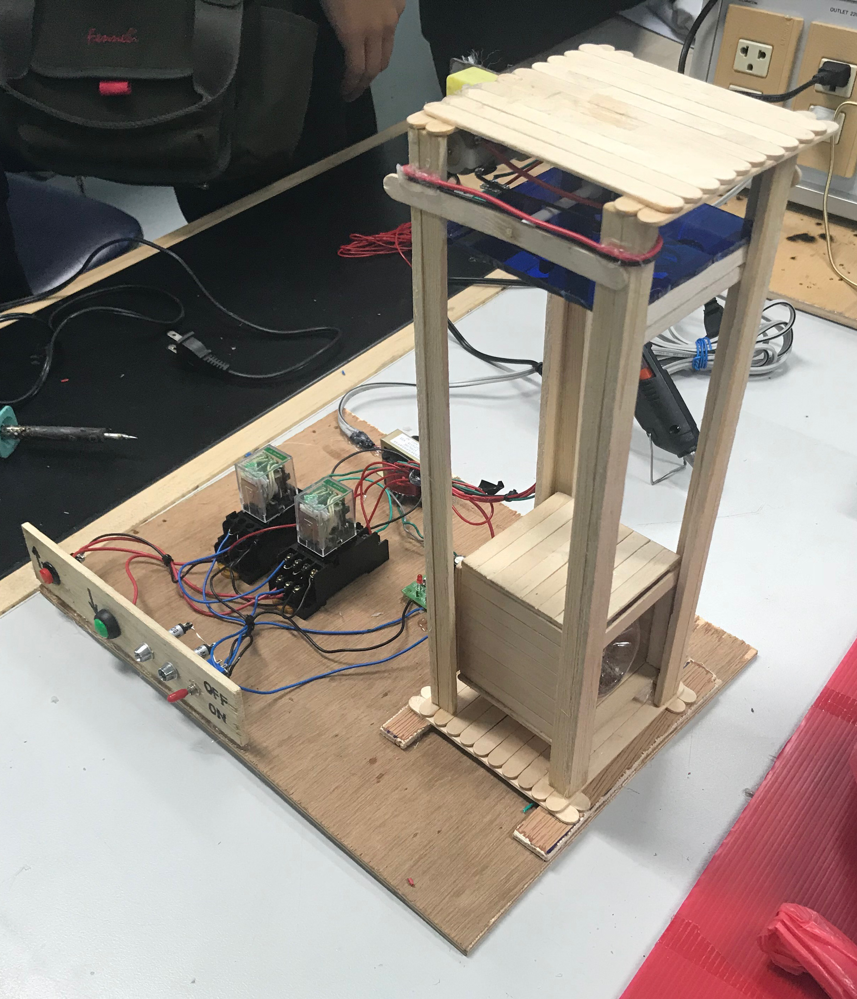

my mini projects
smoke examine systems alert via line application
สิ่งนี้คือเครื่องตรวจสอบควันที่สามารถแจ้งเตือนเมื่อตรวจพบควันไปยังแอปพลิเคชันไลน์ได้ ซึ่งผลงานชิ้นนี้จะใช้ MQ-2 มาเป็นเซ็นเซอร์สำหรับตรวจจับควัน และใช้ nodeMCU ในการเชื่อมต่ออุปกรณ์กับเครือข่าย โดยครั้งนี้เลือก netpie ที่เป็นแพลตฟอร์ม IoT มาใช้เก็บข้อมูล
ในส่วนของการเชื่อมต่อระหว่างอุปกรณ์กับ netpie จะใช้ MQTT protocol ในการสื่อสารและจะกำหนดส่วนนี้ให้กับอุปกรณ์ในขั้นตอนการ programming code บน arduino IDE ทั้งนี้ netpie ยังทำการเชื่อมต่อกับแอปพลิเคชันไลน์อีกด้วย
binary 4 bit number display circuit by IC 7493
งานชื้นนี้จะทำการแสดงเลขฐานสองจาก 0000 - 1111 ผ่าน LED ซึ่งมีสามวงจรหลักคือวงจร power supply ใช้แปลงไฟฟ้าแรงดัน 220VAC > 9VAC > 9VDC > 5VDC สำหรับแหล่งจ่ายไฟให้อุปกรณ์อื่นๆ
วงจร timer มี IC555 ทำหน้าที่หน่วงเวลาในการส่งสัญญาณ และ IC7493 ที่เป็นส่วนสำคัญ ถูกใช้นับเลขและแสดงผลออกมายัง LED ทั้งสี่ตัว
simple elevator


ในงานชิ้นนี้ฉันไม่ได้ทำในส่วนของวงจร ฉันมีหน้าที่ทำงานทั่วไปของกลุ่มอย่าง การประกอบชิ้นส่วนต่างๆ ของโครงสร้าง เช่น การตัดประกอบไม้ให้อยู่ในโครงสร้างที่กำหนด ติดตั้ง สวิตซ์ รีเลย์ หรือชิ้นส่วนของอุปกรณ์อื่นๆ และยังได้ทำเล่มรายงาน presentation slides รวมถึง poster อีกด้วย